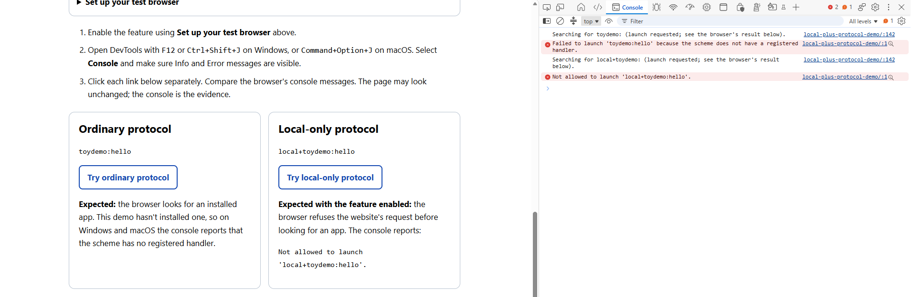

Local-only URLs for desktop apps
A custom URL scheme lets other apps open your app. Websites can use it too, even if you only intended it for app-to-app use.
The solution
Register a scheme with the local+ prefix, such as local+myapp:.
Browsers with the feature enabled block website requests to open it. Native apps can still use it
through the OS.
The problem
You might register myapp: so another desktop app can open a file or start a task in yours.
A website can construct the same URL with its own parameters and ask the browser to launch it.
The browser usually asks the user before opening the app. But agreeing to open an app doesn't mean the user understands what the URL will do. Your handler may never have been designed to process requests from arbitrary websites.
Android already accounts for this. An app's intent filter must include
CATEGORY_BROWSABLE
to receive links from a browser. Developers opt in to web access.
Ordinary custom-protocol registration on Windows and macOS doesn't make that distinction.
Changing the default would break existing web-to-app links, so local+ lets developers
opt individual protocols out instead.
Why it matters
Your app may have access to files and settings that a webpage doesn't. A malicious site could exploit a bug in your URL handler or trick a user into approving an unwanted action.
If websites don't need to use your protocol, you should be able to block them without breaking calls from other apps.
Use it in your app
- Pick a name. For example,
local+myapp. If you also need a web-facing protocol, keep it separate and limit what it can do. - Register it. On Windows, use your app's existing custom-protocol registration. On macOS, add it to your app's URL schemes. Leave off the colon when registering the name. Configure your handler to accept the new name.
- Update callers. Change
myapp:hellotolocal+myapp:hellowherever another app calls yours. The prefix is part of the scheme name; old URLs won't be converted automatically. - Remove the old access. Once callers have migrated, unregister the old scheme or remove its local-only actions. Otherwise, websites can still use it for those actions.
- Test both paths. Confirm that another native app can open the URL through the OS, and that a webpage is blocked in a browser with the feature enabled.
Keep validating incoming URLs. This is a browser restriction, not an OS restriction. Other browsers may behave differently, and administrator policies can allow exceptions.
Try the demo
You don't need to install an app for this test. The page compares two links and shows where the browser blocks the request.
Set up your test browser
Use Chrome Canary or Edge Canary. Fully quit it first, including any background processes, then run one command below. This uses your usual Canary profile, including its settings and sign-ins.
Open this page in the new window.
Windows (PowerShell)
Chrome Canary:
& "$env:LOCALAPPDATA\Google\Chrome SxS\Application\chrome.exe" --enable-features=LocalOnlyAppProtocolPrefixEdge Canary:
& "$env:LOCALAPPDATA\Microsoft\Edge SxS\Application\msedge.exe" --enable-features=LocalOnlyAppProtocolPrefixmacOS (Terminal)
Chrome Canary:
open -a "Google Chrome Canary" --args --enable-features=LocalOnlyAppProtocolPrefixEdge Canary:
open -a "Microsoft Edge Canary" --args --enable-features=LocalOnlyAppProtocolPrefixThe commands assume Canary is installed in its usual location. They don't install anything. The page itself can't turn the feature on or check whether it's enabled.
Compare the links
- Open this page in the browser you started with the feature enabled.
- Open DevTools with F12 or Ctrl+Shift+J on Windows, or Command+Option+J on macOS. Choose Console and show both Info and Error messages.
- Click
toydemo:hello. With no app registered, the browser reports a missing handler. - Click
local+toydemo:hello. The browser blocks the request before looking for an app.
Ordinary protocol
toydemo:hello
The browser looks for an app that handles this URL. If you haven't registered one, the console says the scheme has no registered handler.
Local-only protocol
local+toydemo:hello
With the feature enabled, the browser blocks this link before looking for an app. You should see:
Not allowed to launch 'local+toydemo:hello'.
The page also logs "Searching for..." when you click. That's just a record of the click, not confirmation that the browser found or opened an app. Look at the browser's message below it for the result.
If you've already registered an app for either demo URL, you may get a prompt to open it. Cancel if you don't want to launch it.

toydemo:, launch blocked for
local+toydemo:. Click the screenshot to enlarge it.If both links behave the same
Update Canary, fully quit it, and restart it with the command above. If it's already running, the command may open a window without enabling the feature. On a managed device, administrator policies may allow the launch.
To compare with the feature off, quit Canary and run the same command with
--disable-features=LocalOnlyAppProtocolPrefix instead.
Both links should then look for an app, unless another browser rule or policy prevents it.
Testing with a real app
This demo shows blocking, not a successful app launch. To test launching, register a handler in your own app and open its URL from another native app.
Typing a local+ URL directly into the browser's address bar also keeps the normal
app-launch flow. It still requires a registered handler and may show a prompt. That's different
from a website asking to open the URL.
Admins can allow website launches through AutoLaunchProtocolsFromOrigins or, where supported,
URLAllowlist. A user's saved permission to open the app doesn't override the block.
Next steps
For Windows, we're also exploring a registry-based approach so apps can mark an existing protocol
as local-only without renaming it. That would let existing app-to-app callers keep using the same URLs.
This is separate from the local+ prefix shown in this demo and isn't available here yet.